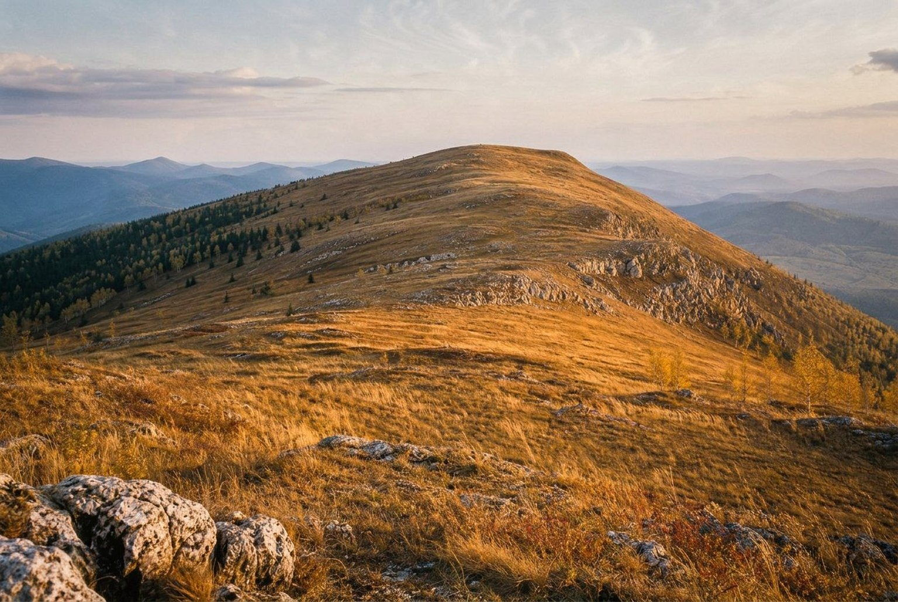
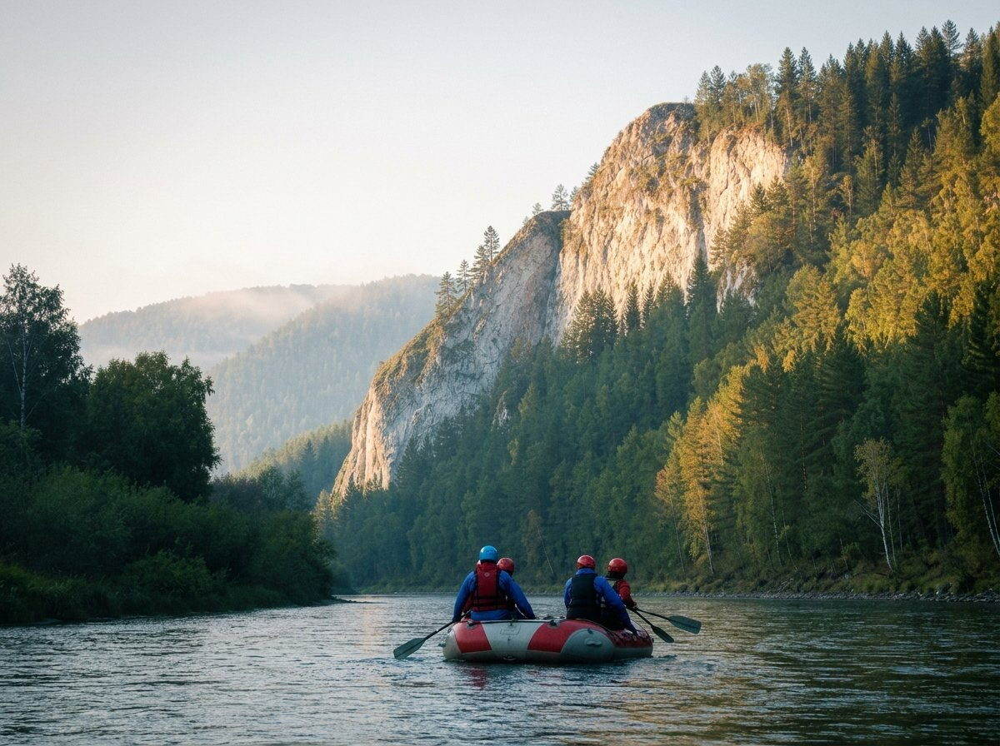

01 / ВЫСОТА
01 / ВЫСОТАГорный маршрут
Ялангас
Панорамы Южного Урала и выход к вершине 1 297 метров. Возможен формат с квадро-заброской к началу пешей части.
Узнать о выезде ↗Путешествия по Южному Уралу
Маршруты, в которых встречаются простор гор, движение рек и люди, с которыми хочется идти дальше.
Хрустальный Горизонт
Мы открываем Южный Урал через пешие маршруты, горные дороги и речные путешествия. Здесь важны не только виды, но и путь, команда и внимание к каждому участнику.
Исследуйте Южный Урал
Однодневные выходы из Белорецка. Даты и условия участия уточняются перед каждым выездом.
01 / ВЫСОТАГорный маршрут
Панорамы Южного Урала и выход к вершине 1 297 метров. Возможен формат с квадро-заброской к началу пешей части.
Узнать о выезде ↗ 02 / СКАЛЫ
02 / СКАЛЫ
03 / ТИШИНА
Река Белая · летний сезон
Летом отправляемся на сплавы по Белой. Один из знакомых участков — от Арского камня до Азапкиной поляны.
Обсудить сплав ↗Наш подход
Хорошее путешествие начинается задолго до выхода на тропу — с подготовки, ясных договорённостей и внимания к группе.
Проверяем маршрут перед выездом и учитываем условия на местности.
Следим, чтобы участники не оставались без внимания и не терялись на маршруте.
До поездки обсуждаем формат, нагрузку, экипировку, трансфер и организационные детали.
Южный Урал в деталях
Пейзажи маршрутов и путешествий.


Начнём с разговора
Напишите нам, чтобы узнать ближайшие даты, маршрут и условия участия.